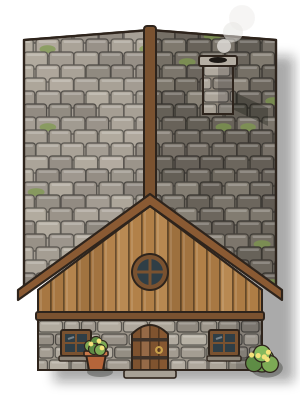
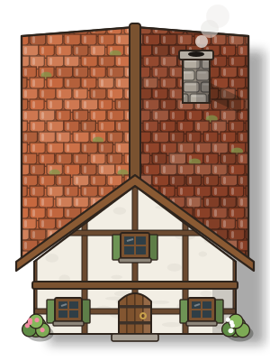
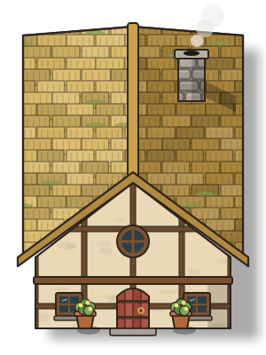
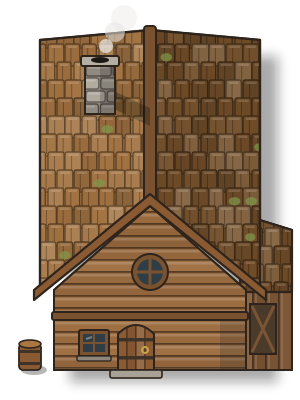
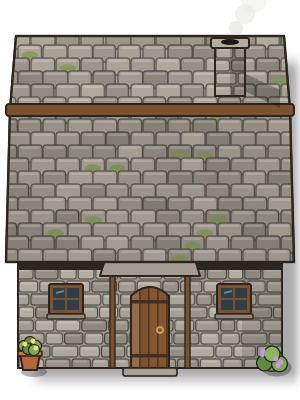
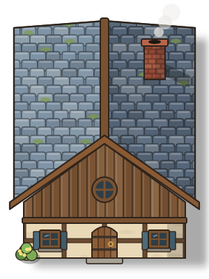
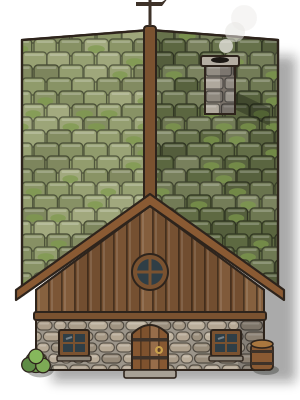
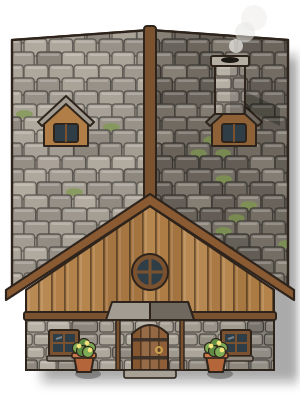
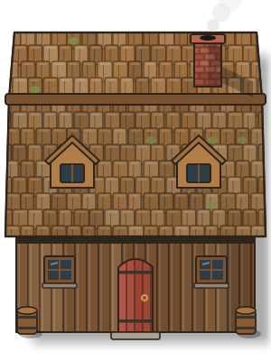
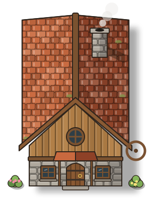

Your reference: grey slate, a plank gable with a round window, a stone ground floor.

Warm clay tiles over white timber-framed plaster, green shutters.

A thick straw roof in bundles, plaster walls, a red door.

A homestead of round logs under wooden shakes, a lean-to shed on the side.

The long side faces you: a deep slate roof, two windows and a porch.

Cool blue slate, a brick chimney, cream plaster and timber.

An old stone house: the roof greened with moss, cobbles, a weathervane.

A big front-gabled house with dormer windows on both slopes and a porch.

Long side to the front, wooden shakes, a barn-red door and dormers.

A smaller clay-roofed house with a porch, flowers and a cart wheel.